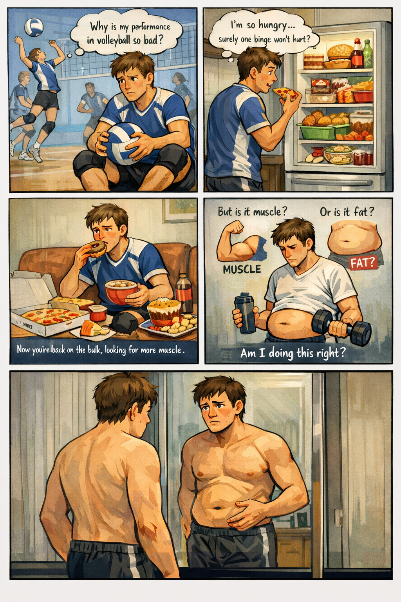

Designed for individuals who want to build a lean, athletic body - combining strength, mobility and performance.
Stuck in a never ending cycle of cutting and bulking? Always thinging you are'nt 100% on what to do? Look on through!
View Programs
Spending wasted time in the endless cycle of bulking and cutting until your abs fuse into one keg or there's no more muscle left to show.
Each bulk makes your steps feel heavier, and each cut makes days feel like months.
“Why is my performance in volleyball so bad?”
“Ugh how much longer on this cut?”
“I’m so hungry… surely one binge won’t hurt?”
Suddenly the cut ends. Your abs were kind of showing… that’s a sign to bulk right? Now you're back on the bulk looking for more muscle.
But is it muscle… or fat?
Then you look at an old photo and realise: “I look the same… just slightly bigger.”
The only thing that changed… was the date.
Imagine eating the foods you enjoy AND getting results. You’re lifting with power, staying athletic, and building a physique that actually performs.
The gym should supplement your lifestyle — not replace it. Whether it's volleyball, bouldering, running, basketball, or simply moving better in life.
Sculpt & Surge was built for that exact purpose.
Rapid controlled fat loss that prioritises training performance. The goal is simple — build a lean athletic baseline that sets the foundation for everything that follows.
Once your lean baseline is built, Surge develops your body into a powerful athletic machine — combining muscle growth, strength and explosive athletic performance.
For those who want to build lean muscle while staying athletic.
Training combines hypertrophy work with explosive movements to develop:
You grow with speed and conditioning in a systematic lean build.
For those looking to become more explosive and athletic.
Training prioritises structured performance blocks to develop:
Your body begins to look and move like a true athlete.
The first phase focuses on aggressively reducing body fat while preserving strength and muscle.
After reaching a lean baseline we hold maintenance calories for approximately 4 weeks.
The final stage branches into two athletic pathways.
This program isn't for everyone.
If you're looking for a quick 4-week transformation or random programming with macros — this probably isn't what you're after.
Sculpt & Surge requires commitment to a bigger goal. Building muscle while staying lean takes time. Developing power and performance requires structured training.
If you're ready to stop spinning your wheels and build a lean, powerful athletic physique — Sculpt & Surge is for you.